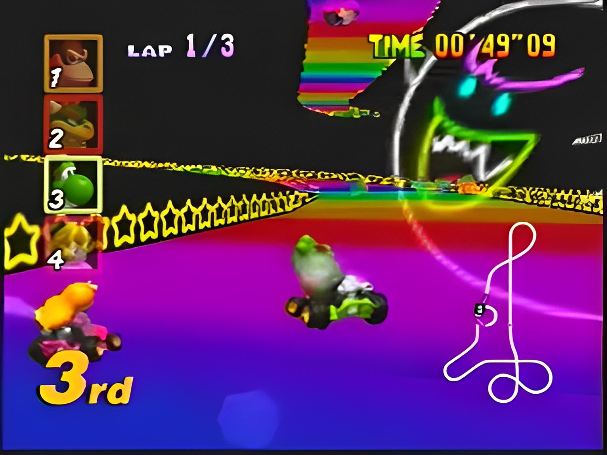

Mario Kart 64 es un juego de carreras arcade que salió para la consola Nintendo 64.
Es el segundo juego de Mario Kart, secuela del exitoso juego de Super Nintendo, Super Mario Kart. Como su antecesor, es un juego de
conducción de karts protagonizado por personajes famosos de Nintendo, (Mario, Luigi, Yoshi...) en el cuál tienes que vencer las copas
en las distintas cilindradas. El juego fue desarrollado y publicado por Nintendo y fue lanzado el 14 de diciembre de 1996 en Japón y
el 10 de febrero de 1997 en Norteamérica. La música fue compuesta por Koji Kondo, el cual participó con éxito en muchos títulos de
Nintendo, y Kenta Nagata.
CARACTERISTICAS GENERALES
- El juego está dividido en varias cilindradas. Cuanta más cilindrada, los adversarios serán más rápidos que el propio
jugador y la dificultad, por tanto, se incrementa.
- Se puede participar en 4 copas (Copa Champiñón, Copa Flor, Copa Estrella y la Copa Especial). Cada copa está formada
por cuatro circuitos.
- En cada carrera participan los ocho corredores. Para poder pasar de circuito, hay que acabar la carrera en los puestos
puntuables, es decir, acabar entre los 4 primeros.
- Para ganar una carrera, se puede utilizar varios items que recogeremos en la carrera y que podremos utilizar para
entorpecer la carrera a otros jugadores o para beneficio propio. Por ejemplo, podremos utilizar caparazones para atacar
a otros adversarios, utilizar setas para obtener más velocidad, incluso podremos utilizar plátanos para dificultar el
camino al resto de jugadores.
- La dificultad es la misma que en la anterior versión la cual se basa en que la máquina es tan rápida según lo alto
que sea la cilindrada llegando a velocidades un poco por encima de la propia. Además, para hacer más divertida la
carrera, el adversario que tienes detrás aumenta su velocidad haciéndote la carrera más difícil.
MODOS DE JUEGO
- Mario Grand Prix (GP)
Es el modo principal del juego. Uno o dos jugadores compiten contra los jugadores controlados por la máquina en grupo
de 8 pilotos a través de los cuatro circuitos que constan una copa. El jugador selecciona una de las cuatro copas que se
permiten eligiendo también el nivel de dificultad expresado en cilindradas (50, 100 o 150cc).
- Time Trials
Este modo es exclusivo para el modo de un jugador. En este modo es posible seleccionar cualquier circuito del juego.
Cuando se selecciona una carrera, al jugador se le otorga el ítem de triple champiñón y el kart tiene una cilindrada
de 100cc. En mitad de una carrera no podrás coger más ítems. En este modo se corre solo y sirve para guardar las vueltas
más rápidas.
- Versus Mode
Dos, tres o cuatro jugadores pueden participar en este modo. En este modo los jugadores compiten entre sí pudiendo
elegir el circuito sin necesidad de elegir una copa en el cual correrán sin el estorbo de la máquina ya que los otros
corredores no participan. Se puede, por tanto, seleccionar el circuito además del tamaño de la cilindrada.
- Battle Mode
En este modo participan dos, tres o cuatro jugadores. En este modo los jugadores compiten en los cuatro circuitos
cerrados creados especialmente para la ocasión. Los circuitos no gozan de la misma estructura que los otros circuitos
del modo principal ya que éstos no tienen salida ni meta sino que son circuitos cerrados con distintos niveles y que
disponen de varios caminos.
CURIOSIDADES
 En la versión japonesa de Mario Kart 64, las vallas publicitarias están basadas en marcas reales, como Marlboro (Marioro) o Mobil 1 (Yoshi 1). Salvo Koopa air y Shot!, el resto de parodias de marcas fueron sustituidas por otras en las versiones lanzadas en occidente.
En la versión japonesa, Luigi y Wario no fueron doblados por Charles Martinet, sino por Julien Bardakoff y Thomas Spindler respectivamente.
El juego se iba a llamar Super Mario Kart R pero por alguna razón cuando se lanzo Sonic R, Nintendo pensó que el nombre era un plagio y decidió cambiarle por Mario Kart 64; otros rumores afirman que es por la creepypasta de Tails Doll.
Puntuaciones: